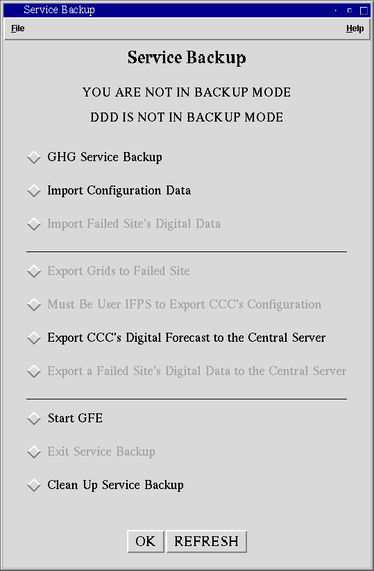
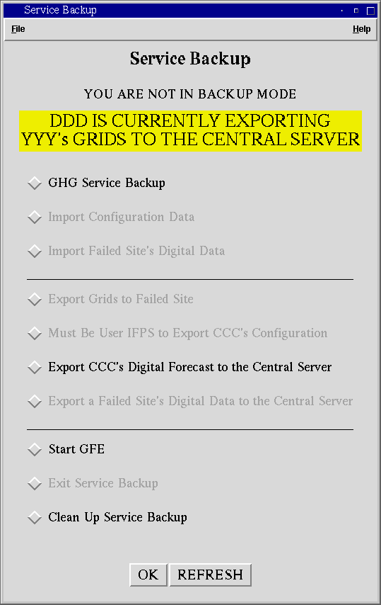
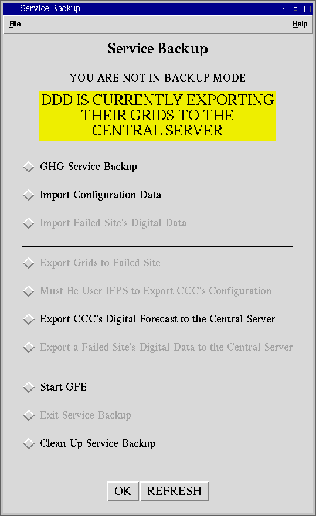

Service Backup GUIMultiple Domains |
If your site currently has two domains, you will notice that there are several differences between your GUI and related programs and the GUI and programs that appear in the help pages. These differences include
Banners
Choose Domain GUI
Clean Up Script
Error Messages
This page will explain the differences that you may encounter while using the Service Backup GUI (In all of the examples below, CCC is the 3 letter ID of the domain that is running the Service Backup GUI, DDD is the 3 letter ID of the other domain that is not controlled by the Service Backup GUI, XXX is a failed site being backed up by CCC, and YYY is a failed site that DDD is performing service backup for.).
If you site has two domains, you will notice that there are two banners at the top of the GUI. The top banner will reflect the state of the Service Backup GUI for the domain that you are currently running it as. These messages that appear in the GUI will not differ from those at single domain sites that appear in the other Help pages. When you are in service backup mode, the background of the banner will be orange.
The lower banner will reflect the state of the Service Backup GUI for the domain that you are not running the GUI as. When that domain is in service backup mode, the background of the banner will be yellow. The message in this banner will differ from those in the other help pages. You will see these banners below and how they will effect the state of the Service Backup GUI.

You will see this first banner when both domains are not in service backup mode. At this point, you will be able to
-Import a failed site's configuration
-Export CCC's configuration to the central server for service backup (this option is only enabled when the GUI is started as user ifps)
-Export CCC's digital data to the central server for service backup
-Start GFE
-Run the clean up script
You will see this banner when DDD is importing a failed site's configuration. Until the import is finished, you will only be allowed to
-Export CCC's digital data to the central server for service backup
-Start GFE
-Run the clean up script

You will see this banner if DDD has finished importing YYY's configuration and is waiting for YYY's server to start to begin importing YYY's digital data. At this point, you will only be able to
-Export CCC's digital data to the central server for service backup
-Start GFE
-Run the clean up script

You will see this banner while DDD is importing YYY's digital data. Until the import is finished, you will only be able to
-Export CCC's digital data to the central server for service backup
-Start GFE
-Run the clean up script

You will see this message while DDD is backing up YYY and DDD is not currently importing or exporting any digital data or configuration files. At this point, you will be able to
-Import a failed site's configuration
-Export CCC's configuration to the central server for service backup (this option is only enabled when the GUI is started as user ifps)
-Export CCC's digital data to the central server for service backup
-Start GFE
-Run the clean up script

You will see this message while DDD is exporting YYY's grids back to them. At this point, you will only be able to
-Export CCC's digital data to the central server for service backup
-Start GFE
-Run the clean up script

You will see this message while DDD is exporting YYY's grids to the central server. At this point, you will only be able to
-Export CCC's digital data to the central server for service backup
-Start GFE
-Run the clean up script

You will see this message while DDD is exporting their configuration to the central server for service backup. At this point, you will only be able to
-Export CCC's digital data to the central server for service backup
-Start GFE
-Run the clean up script

You will see this message while DDD is exporting their grids to the central server for service backup. At this point, you will only be able to
-Import Configuration Data
-Export CCC's digital data to the central server for service backup
-Start GFE
-Run the clean up script
Choose Domain GUI [BACK TO THE TOP]
If your site has multiple domains, the Choose Domain GUI will allow you to select which domain to start the Service Backup GUI and GFE as. The GUI also provides you with the location of that domain’s server. This will hopefully make it easier to perform service backup for two failed sites.

While you are not in service backup mode, the Choose Domain GUI displays both domains and the location of each domain's server

While you are in service backup mode, the Choose Domain GUI displays both domains and any failed site's that are currently being backed up.
Clean Up Script [BACK TO THE TOP]
The clean up script will only allow you to clean up a failed site's configuration as the domain that you initiated service backup as. When backing up two failed sites, be sure to check what domain you are running as to prevent cleaning up the wrong site. If you try to clean up a failed site from the wrong domain, you will see the following message:

Error Messages [BACK TO THE TOP]
There are a few error messages that will only appear if your site has multiple domains. These messages appear below, along with a brief explanation of each one.

This message will appear when you try to import a failed site's configuration while DDD is in the process of importing or exporting data. Check the yellow banner at the top of the service backup GUI to see what they are importing or exporting. Once they are finished, you will be able to import a failed site's configuration.

This message will appear when you try to import a failed site's digital data while DDD is in the process of importing or exporting data. Check the yellow banner at the top of the service backup GUI to see what they are importing or exporting. Once they are finished, you will be able to import the failed site's digital data.

This message will appear when you try to export grids back to a failed site while DDD is in the process of importing or exporting data. Check the yellow banner at the top of the service backup GUI to see what they are importing or exporting. Once they are finished, you will be able to export the digital data back to the failed site.

This message will appear when you try to export your configuration to the central server while DDD is in the process of importing or exporting data. Check the yellow banner at the top of the service backup GUI to see what they are importing or exporting. Once they are finished, you will be able to export your configuration to the central server.

This message will appear when you try to export a failed site's digital data to the central server while DDD is in the process of importing or exporting data. Check the yellow banner at the top of the service backup GUI to see what they are importing or exporting. Once they are finished, you will be able to export a failed site's digital data to the central server.